Virtual Private Networks, or VPNs, are a way of tunneling a machine's network traffic within a secure tunnel to a remote VPN server. As shown in the figure below, this traffic can then be placed onto the remote network and potentially forwarded onto the Internet. In this manner, traffic from the machine appears to come from network addresses on the remote service provider's network.
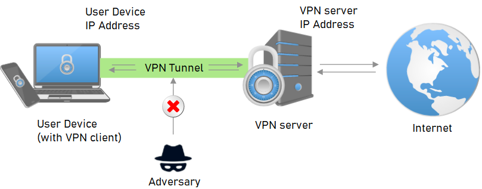
In this lab, we'll use a virtual machine running on Google Cloud Platform to bring up a VPN server running OpenVPN, an open-source VPN implementation. We'll then set up our client machine to connect through it in order to access the Internet.
To begin with, visit the Marketplace on Google Cloud Platform and search for OpenVPN.
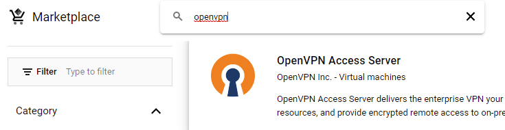
Launch the deployment and enable access to the APIs that it requires on your project to create the solution.
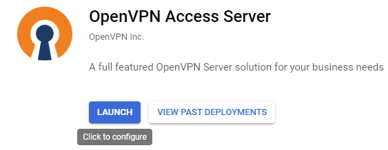
In configuring the server, specify a zone that is in the us-east region.
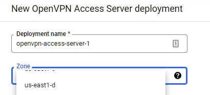
Scroll down the configuration UI to view the ports that are enabled on this deployment.
- What UDP and TCP ports are allowed in order for you to communicate with the VPN access server?
Scroll to the bottom and deploy the solution. Wait for the deployment to complete and for the site information to appear with the URLs and credentials needed to access it. Keep the window open.
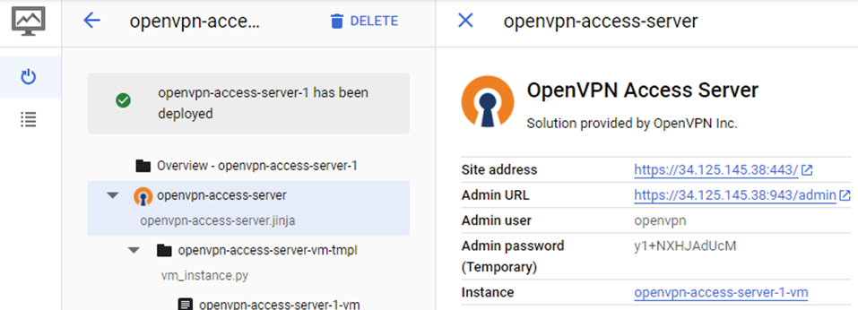
As displayed in the results of the deployment, the server is configured with an administrator user (openvpn) and a temporary password on the Linux VM the server runs on. We'll want to change this password. To do so, click on "SSH" to log into the server.
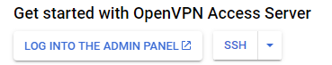
Then, use the following command to change the password for the openvpn account.
sudo passwd openvpnClose the SSH session and go back to the deployment window. Click on "LOG INTO THE ADMIN PANEL" or visit the panel directly by visiting the "Admin URL" shown (e.g. https://<ExternalIP>:943/admin). Your browser will likely complain about the TLS certificate the solution presents to you. In a production deployment, we would need to obtain a valid TLS certificate for our server. Bypass these warnings and "proceed" to the URL as shown below on a Google Chrome browser.
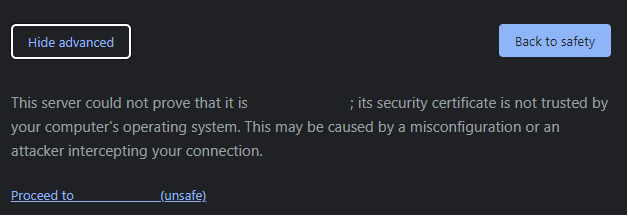
Login using the openvpn account with the password you just set to get to the admin panel. Agree to the terms of service, then click on "VPN Settings" on the side menu.
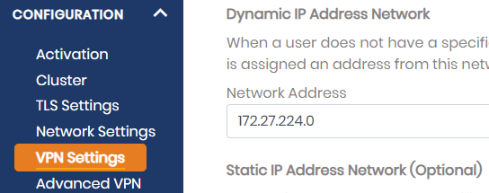
We'll need to enable traffic forwarding to the Internet as well as configure DNS settings. Scroll down to find the "Routing" options and then turn on traffic forwarding to the Internet as shown below:
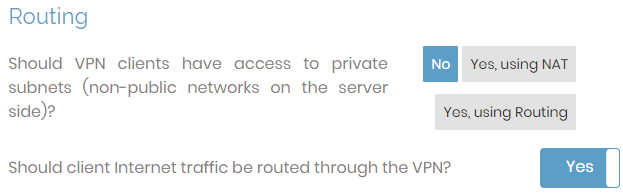
Then, scroll to find the DNS settings.
Within VPN Settings, point DNS requests to specific DNS servers 1.1.1.1 and 8.8.8.8. Be sure to "Save Settings" and then "Update Running Server".
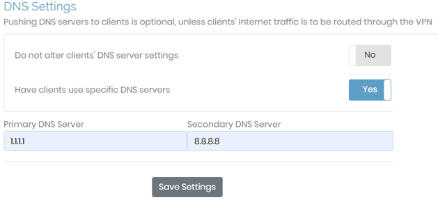
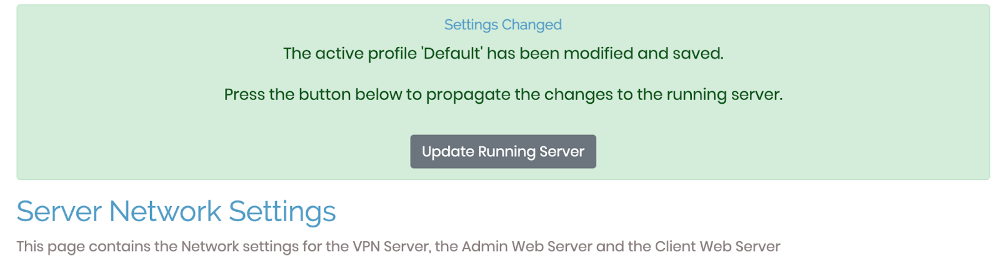
In the deployment window, click on the site URL for the VPN server or go to it directly at https://. Login using the openvpn account. You will be given the option to download and install a custom OpenVPN Connect client that has been configured to connect to this VPN instance. Download and install the client (typically the one recommended). OpenVPN Connect supports a multitude of client platforms as shown below.
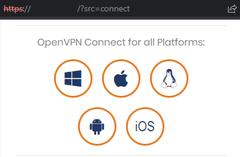
You will need to allow the installation of an unsigned application. If you do not want to do so, you can instead download and install the signed OpenVPN client at https://openvpn.net/download-open-vpn/ and then download the connection profile for the VPN server from the site page (shown below). Upon launching the signed client, you can then load the downloaded connection profile into it.
Once installed with the appropriate connection profile, use the OpenVPN client to connect to the VPN server using the openvpn account credentials. Ensure you are able to connect to the VPN server as shown below.

- Take a screenshot showing the connected profile that includes the IP address of your VPN server
To test that you're using the VPN, visit https://ipinfo.io and view the IP address that it believes you are using.
- Take a screenshot showing the information about the IP address

- What availability zone did you deploy the VPN server in? What city and state is the VPN server located in?
Disconnect your client from the VPN server. Uninstall the OpenVPN client if you do not wish to use it any longer. Then, go back to the deployment window and delete the deployment.
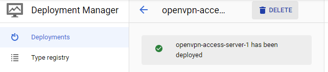